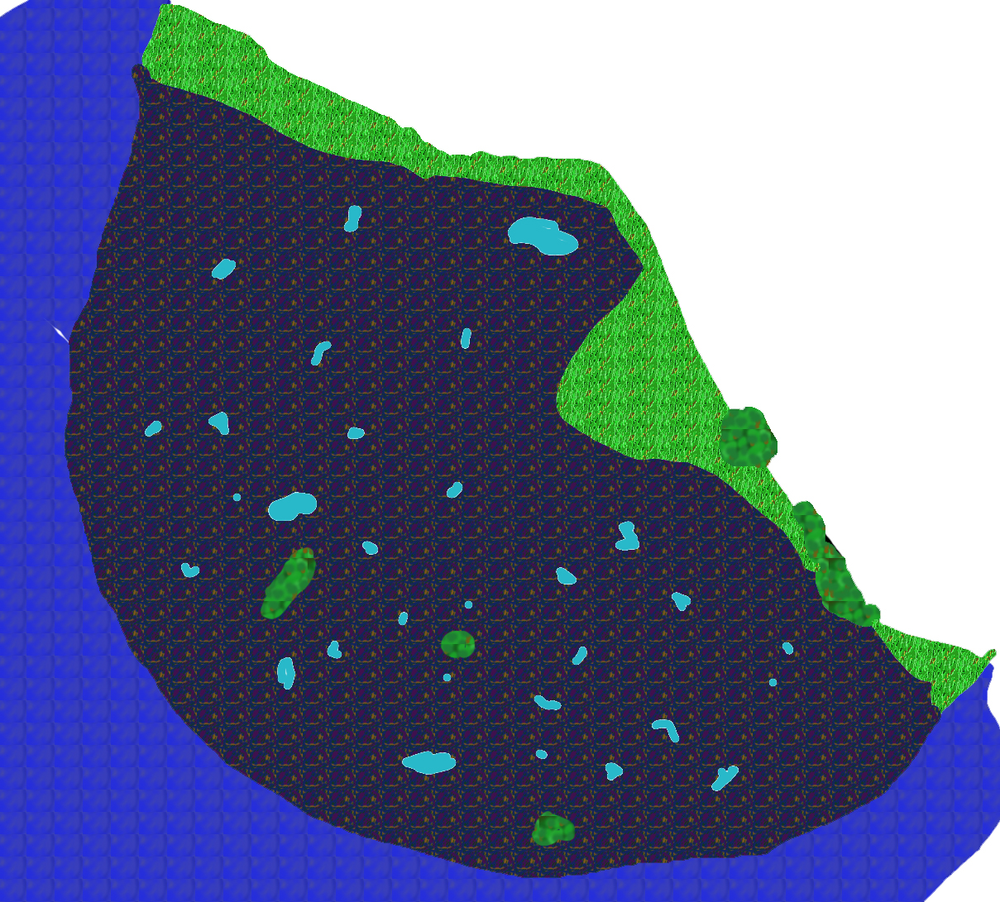

back
Great Marsh

The Great Marsh is the most foul and stinky place on the continent, you can smell the stale water and rotting corpse of animal slowly decomposing from miles away. Not many people come here since there is very little reason to go and a lot of reason not to.
Cities: There are no cities in the region, but Gripplis have small clan living here and there throughout the swamp.
Landmark:
There are a couple of notable landmark in the Great Marsh, the first one is the shipwreck, a region where the ocean used to reach that is now filled with the remains of old ship carrying various goods. Next is what is called the Landfill, it is a region on the border between the Great Marsh and The Ruined City where tons of scrap material, metal and minerals have been dumped and left there, no one really knows why or how long this stuff has been there. Finally there is rumor that a Shrine to the God of Sloth exist in the Swamp, although no one has even tried to find it.
Environment:
The Great Marsh is a swamp, it has some lake here and there, but usually the place look like a mix between an inundated forest and a sewer. It is a foul place with many peculiar odors. It is difficult to travel through the land here since there can be between anywhere of 1 to 20 feet of water and it can be too late before you know how deep your next step will be. There is a constant mist in the swamp that render vision very limited.
Wildlife and Monsters:
The Gripplis are the most intelligent creature to live in the swamp, everyone else tries to stay clear of it. Most wildlife in the region are aggressive and coupled with the low visibility and the difficulty of moving through the terrain, you could end up in an Anaconda stomach before you ever have a chance to see it.